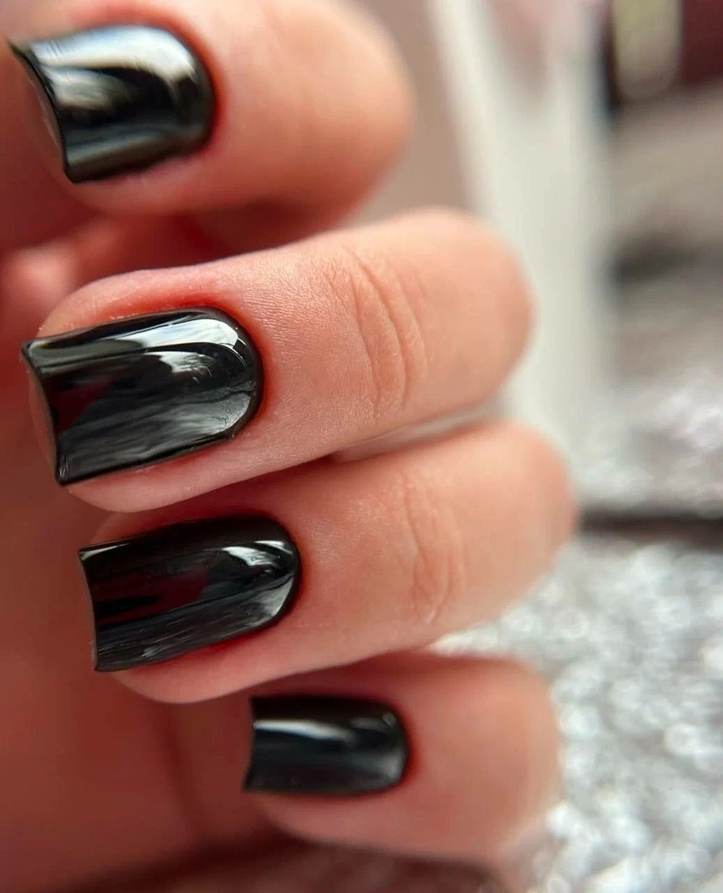

Прайс-лист
Услуги и цены
Цены в белорусских рублях (Br). Выберите раздел или смотрите всё сразу.

Цены на брови и ресницы взяты из актуального прайса студии, цены на маникюр и педикюр лучше уточнять при записи. Открыть прайс картинкой

Запись
Выберите удобное время
Напишите в мессенджер или позвоните: подберём время и подскажем по услугам.
Записаться